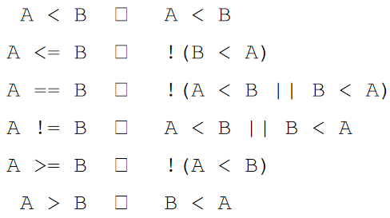

7.Operator Overloading
一、左值&右值
- 左值是可以标识的、具有地址的表达式或变量。左值通常代表着一个具体的内存位置，因此可以在赋值操作的左侧使用。
- 右值是临时的、不可标识的表达式或值。右值通常代表计算的结果或临时对象，只能出现在赋值操作的右侧。
在重载操作符时，尤其需要注意返回值是左值还是右值，例如：
- 默认情况下，+操作符返回一个右值，因此
(x + y) = 5;的写法就是非法的。 myArray[5] = 137;是合法的，因为myArray[5]的返回值是一个左值。
若要创建一个返回左值的函数，则需让该函数返回一个非const引用，如：
1 | |
若要创建一个返回右值的函数，则需让该函数返回一个const对象，如：
1 | |
因为返回类型被const修饰，因此类似RValueFunction() = 137;的代码自然是非法的。
二、重载复合赋值操作符：op=
复合赋值操作符用于在C++中修改对象自身，并通常作为成员函数实现。这些操作符允许你以一种简洁的方式更新对象的状态。基本的函数签名如下：
1 | |
op代表具体的操作符（如+=或-=）。ParameterType表示传入参数的类型。
2.1 示例
考虑一个Vector3D类，它代表一个三维向量。我们将重载+=和-=操作符，以及一元的负号-操作符。
类定义
1 | |
操作符实现
- 重载
+=操作符：实现向量加法。
1 | |
- 重载
-=操作符：利用+=操作符和一元负号操作符来实现向量减法。
1 | |
- 重载一元负号
-操作符：返回向量的负值。
1 | |
三、重载数学运算符：+/-
重载数学运算符时，遵循以下一般原则确保代码的正确性和高效性：
3.1 一般原则
- 返回值类型：为了避免返回对象被非预期修改，数学运算符应返回一个不允许修改的临时对象，通常是
const MyClass类型。 - 常量性：运算符不应修改其操作数，因此重载运算符的函数通常需要被声明为
const。 - 自由函数：为了支持所有相关类型的操作数（包括那些不是类对象的），数学运算符通常作为自由函数（非成员函数）实现。
- 效率：复合赋值运算符（如
+=、-=）通常比单独的数学运算符（如+、-）更高效，因为复合赋值可以就地修改对象并返回引用，避免了额外的对象复制。
3.2 示例
假设存在一个Matrix类，我们想要支持标量乘法。直接将*运算符作为成员函数重载可能会限制其使用（如2.71828 * myMatrix将无法编译），因为左侧操作数不是Matrix类型。
解决方案
将乘法运算符*重载为自由函数，支持double和Matrix类型的操作数，并按顺序接收这两个参数。这样做可以无缝支持double * Matrix和Matrix * double两种运算。
1 | |
四、重载元素选择运算符：[]
重载元素选择运算符[]允许类实例通过下标操作访问其元素，类似于数组。为了使这种操作更符合直觉并兼容不同的使用场景（如对常量对象的访问），通常需要提供两个版本的运算符重载：一个用于非常量对象，另一个用于常量对象。
4.1 示例
在自定义的string类中，[]运算符的重载允许通过下标访问字符串中的字符。需要实现两个版本：
- 非常量版本：返回一个可修改的字符引用，允许修改通过下标访问的字符。
1 | |
- 常量版本：当
string对象被声明为常量时，这个版本的运算符允许访问下标对应的字符，但不允许修改它。返回一个常量引用。
1 | |
4.2 重要性
- 返回左值：这两个重载的
[]运算符都返回引用（一个是char&，另一个是const char&），这允许左值语义，例如允许赋值操作。 - 常量对象兼容：提供
const版本的运算符重载使得在常量对象上使用[]运算符成为可能，保持了对常量对象的只读访问。
五、重载流插入操作符 <<
重载流插入操作符 << 允许自定义类型以流式的方式输出到标准输出流（如std::cout）或其他输出流中。以下是实现这一功能时的关键考虑事项：
5.1 基本原则
- 返回类型：为了支持连续的流式输出操作（链式调用），如
cout << obj1 << obj2;。operator<<应返回对输出流的非const引用。 - 实现为自由函数：为了正确重载对
ostream类型的操作符，operator<<需要实现为自由函数（非成员函数），这样做可以确保操作符的第一个参数是输出流对象的引用。 - 友元函数声明：将这个自由函数声明为类的友元，可以使它访问类的私有或保护成员变量，便于输出类内部的信息。
5.2 示例实现
以下示例展示了如何为一个自定义类MyClass重载<<操作符，使其可以输出类的私有成员数据：
1 | |
六、重载递增（++）操作符
在C++中，递增（++）和递减（--）操作符可以被重载以提供自定义类的特定行为。这些操作符有两种形式：前缀（++x，--x）和后缀（x++，x--）。
6.1 前缀形式
- 定义：前缀形式直接增加（或减少）变量的值，并返回变量的新值。它是一个更高效的操作，因为它不需要复制对象。
- 返回类型：应返回对象的引用（
MyClass&），以允许链式操作。
6.2 后缀形式
定义：后缀形式首先保存变量的原始值，然后增加（或减少）变量的值，最后返回变量原始值的副本。这个过程涉及到额外的复制操作，因此通常比前缀形式慢。
返回类型：为了避免对返回的临时对象进行修改，通常返回对象的值（
const MyClass）。区分参数：后缀操作符通过接受一个
int参数来与前缀版本区分，这个参数通常不使用但必须存在。
6.3 示例
1 | |
七、重载关系运算符
一般而言，关系运算符要重载一整套，一旦有了operator<的实现，就可以仅根据operator<来定义所有其他五个关系操作符：

八、类型转换机制
8.1 转换构造函数
转换构造函数允许C++中的对象通过单个值的初始化实现类型的隐式转换。这种构造函数接受单一参数，使得类的对象可以从该参数类型隐式转换而来。
示例：
定义一个RationalNumber类，它接受整数作为分子和分母（分母有默认值）的构造函数：
1 | |
这允许你通过以下方式隐式创建RationalNumber对象：
1 | |
这行代码隐式地将整数137转换为RationalNumber类型，实际上调用的是RationalNumber(137)。
8.2 转换操作符
转换操作符是一种特殊的类成员函数，用于实现对象到另一种类型的隐式转换。这些操作符没有显式的返回类型声明，而是通过操作符本身隐式指定返回类型，并通常被声明为const方法。
示例：
1 | |
这些转换操作符允许MyClass对象在需要AnotherClass或int类型时自动转换。
8.3 explicit关键字
为了防止不期望的隐式转换带来的潜在问题，C++提供了explicit关键字。explicit用于构造函数或转换操作符时，将禁止该构造函数或转换操作符参与隐式类型转换。
示例：
将转换操作符声明为explicit，意味着这种类型转换只能显式进行，避免了隐式转换可能带来的意外行为。
1 | |
使用explicit关键字的构造函数或转换操作符要求必须显式进行类型转换，如使用static_cast<bool>(obj)进行转换，从而提高了代码的安全性和可读性。